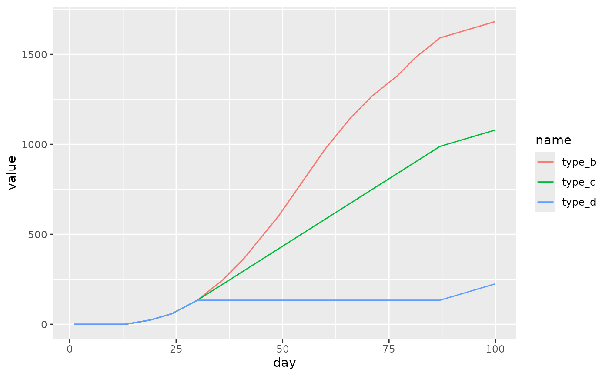

Calculation of growing degree days (GDD) in the pollen package
Jakub Nowosad
2025-09-30
Source:vignettes/gdd.Rmd
gdd.RmdGrowing degree days (GDD) are a measure of heat accumulation used to predict plant and animal development rates. It can be, however, calculated using several approaches. The pollen package allows for three different versions of the GDD calculations. The goal of this vignette is to describe and show examples of calculating GDD using different methods.
Let’s start with attaching a set of package used in this vignette:
Next, we will use the gdd_data dataset - a data frame
with three columns:
-
day- this could be a date in real data -
tmax- this value would represent a maximum temperature in real data -
tmin- this value would represent a minimum temperature in real data
data("gdd_data", package = "pollen")
head(gdd_data)
#> day tmax tmin
#> 1 1 2 2
#> 2 2 2 2
#> 3 3 2 2
#> 4 4 2 2
#> 5 5 2 2
#> 6 6 2 2We can vizualize the gdd_data dataset using the
ggplot2 package:
df_plot1 <- pivot_longer(gdd_data, tmax:tmin)
p1 <- ggplot(df_plot1) +
geom_line(aes(day, value, color = name))
p1
The pollen package allows for calculations of
growing degree days (GDD) using the gdd() function. This
function accepts up to five arguments:
-
tmax- daily maximum temperature -
tmin- daily minimum temperature -
tbase- base temperature -
tbase_max- maximum base temperature -
type- type of the GDD calculations. Either “B”, “C”, or “D”. The default is “C”.
The last argument is inspired by the article by Baskerville and Emin (1969) (see Figure 1 in the mentioned paper).
- Type
"B"- The heat units are calculated based on the difference between the mean daily temperature and the threshold (tbase). In the case when the value oftminis lower thantbase, then it is replaced bytbase - Type
"C"- same as type"B"and when the value oftmaxis larger thantbase_max, then it is replaced bytbase_max - Type
"D"- same as type"B"and when the value oftmaxis larger thantbase_max, then no heat units are added
gdd_data$type_b <- gdd(tmax = gdd_data$tmax, tmin = gdd_data$tmin,
tbase = 5, type = "B")
gdd_data$type_c <- gdd(tmax = gdd_data$tmax, tmin = gdd_data$tmin,
tbase = 5, tbase_max = 20, type = "C")
gdd_data$type_d <- gdd(tmax = gdd_data$tmax, tmin = gdd_data$tmin,
tbase = 5, tbase_max = 20, type = "D")
head(gdd_data)
#> day tmax tmin type_b type_c type_d
#> 1 1 2 2 0 0 0
#> 2 2 2 2 0 0 0
#> 3 3 2 2 0 0 0
#> 4 4 2 2 0 0 0
#> 5 5 2 2 0 0 0
#> 6 6 2 2 0 0 0Finally, let’s compare these three types:
df_plot2 <- pivot_longer(gdd_data, type_b:type_d)
p2 <- ggplot(df_plot2) +
geom_line(aes(day, value, color = name))
p2
The above figure clearly shows that the selection of the calculation
method (type) can make a large difference in the output
values. Therefore, it is crucial to select the type and
other parameters (tbase and tbase_max) that
are appropriate for the studied phase in the plant or animal
development.